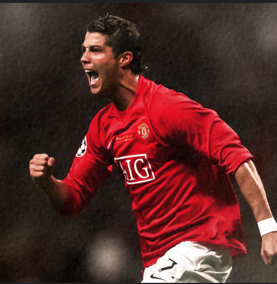

The Most Loved Sport
football is a sport many people enjoy. It is played all over the world. Millions watch games every week. Each game has two teams. Each team has 11 players. The match starts at the center. The goal is to score in the net. Players mainly use their feet to play.
Only goalkeepers can use their hands. Teamwork is very important. Good teams talk to each other and help one another. Players practice every day. The World Cup is a big event. It happens every four years. Famous players inspire many fans. Fans cheer loudly for their teams.
Stadiums are full of supporters. The energy during matches is amazing. Soccer teaches respect and fairness. Injuries can happen, but players try hard. Kids play soccer and have fun. Many start playing when they are young. Scoring a goal feels amazing. Soccer connects people everywhere.
It is a game of fun and joy. Each match is a new adventure. In the end, soccer is more than just a game. It is a passion for many fans. The love for soccer keeps growing. Every game brings happiness. football is part of our lives.
This was information about my favorite sport